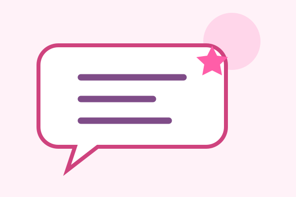
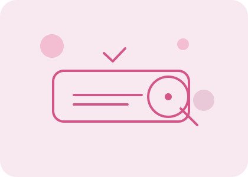
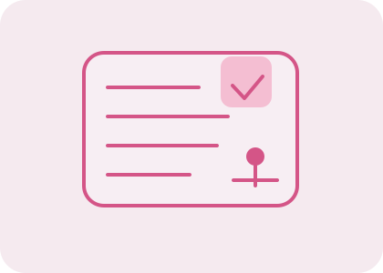
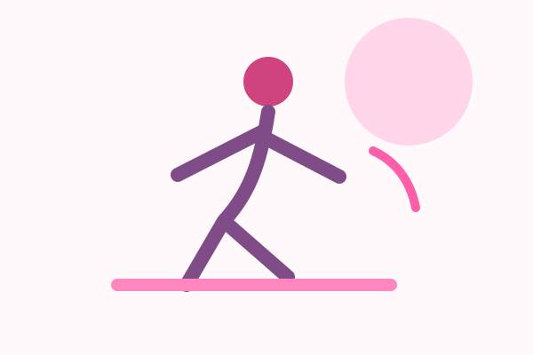
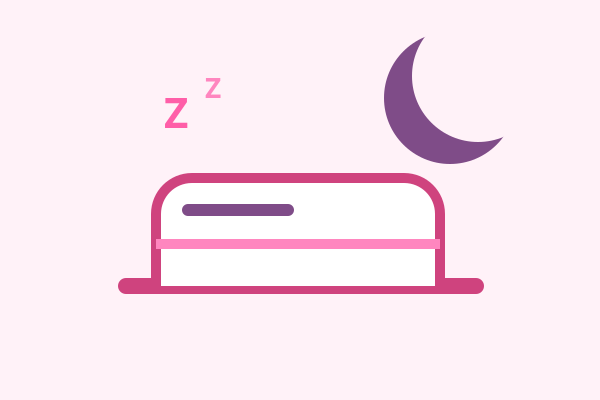
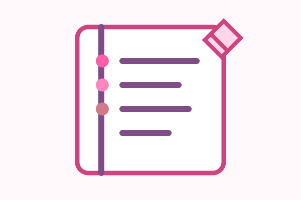

Магия первых 30 минут утра
Почему отказ от соцсетей сразу после пробуждения меняет уровень тревожности на весь день.
Читайте наши новые советы и научные рекомендации для здорового образа жизни.
База знаний
Пошаговый план
Вдохновение для рутины








Почему отказ от соцсетей сразу после пробуждения меняет уровень тревожности на весь день.
Психологические ловушки перфекционизма и почему важно хвалить себя за маленькие победы.
Простые способы пить норму воды без мучений и насилия над организмом.